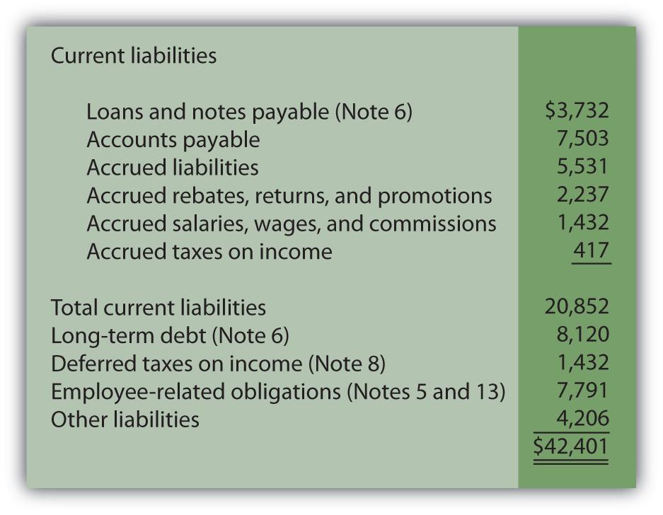

At the end of this section, students should be able to meet the following objectives:
Question: The June 30, 2009, consolidated balance sheet for The Procter & Gamble Company and its subsidiaries reports total liabilitiesFuture sacrifices of economic benefits arising from present obligations; the debts of an organization. of over $71 billion, including current liabilities of approximately $31 billion. That seems to be a rather large figure, especially for an organization holding only $3.3 billion in cash and cash equivalents.
For reporting purposes, the current liabilitiesDebts that will be satisfied within one year from the date of a balance sheet. were divided into several specific categories:
When creating a balance sheet, what is reported as a liability? Why are some liabilities shown as current whereas others are not? How does an accountant draw a distinction between liabilities that are labeled as current and those that are reported as noncurrent (sometimes referred to as long-term liabilities)?
Answer: A liability is an obligation owed to a party outside the reporting organization—a debt that can be stated in monetary terms. Liabilities normally require the payment of cash but may at times be settled by the conveyance of other assets or the delivery of services. Some reported liabilities are for definite amounts, although a number are no more than estimations.
The distinction between current and noncurrent liabilitiesDebts that will not be satisfied within one year from the date of a balance sheet. is a function of time. A debt that is expected to be satisfied within one year from the date of the balance sheet is classified as a current liability.In upper-level accounting courses, the definition of a current liability is refined a bit. It refers to any liability that will require the use of a current asset or the creation of another current liability. However, the one-year standard presented in this textbook is sufficient in a vast majority of cases. Amounts owed for rent, insurance, utilities, inventory purchases, and the like usually fall into this category. If payment will not be made until after that one-year interval, the liability is reported as noncurrent. Bonds and notes payable are common examples of noncurrent debts as are liabilities for employee pensions, long-term leases, and deferred income taxes. Current liabilities appear before noncurrent liabilities on a balance sheet.
Question: Below is the liability section of the balance sheet reported by Johnson & Johnson and Subsidiaries as of December 28, 2008. Note that additional information about many of these liabilities is provided in the notes to the company’s financial statements.
Figure 13.1 Liability Section of Balance Sheet, Johnson & Johnson and Subsidiaries as of December 28, 2008
All numbers in millions.
Decision makers who analyze an organization such as Johnson & Johnson usually spend considerable time studying the data available about liabilities, often focusing on current liabilities. Why is information describing liabilities, especially the size and composition of current liabilities, considered so important when assessing the financial position and economic health of a business?
Answer: Liabilities represent claims to assets. Debts must be paid as they come due or the entity risks damaging its future ability to obtain credit or even the possibility of bankruptcy. To stay viable, organizations need to be able to generate sufficient cash on an ongoing basis to meet all obligations. Virtually no other goal can be more important, both to company officials and any external decision makers assessing an entity’s financial wellbeing and potential for future success.
In general, the higher a liability total is in comparison to the reported amount of assets, the riskier the financial position. The future is always cloudy for a company when the size of its debts begins to approach the total of its assets. The amount reported as current liabilities is especially significant in this analysis because those debts must be satisfied in the near future. Sufficient cash has to be available quickly, often within weeks or months. Not surprisingly, analysts become concerned when current liabilities grow to be relatively high in comparison with current assets because the organization might not be able to meet those obligations as they come due. In a newspaper account of Advanced Cell Technology, the following warning was issued: “It reported $17 million in current liabilities, but only $1 million in cash and other current assets, an indication it could be forced to file for bankruptcy protection.”Todd Wallack, “Fame-courting biotech running short of cash,” The Boston Globe, July 17, 2008, A-1.
As mentioned in an earlier chapter, one tool utilized by decision makers in judging the present level of risk posed by a company’s liability requirements is the current ratioFormula measuring an organization’s liquidity (the ability to pay debts as they come due); calculated by dividing current assets by current liabilities.: current assets divided by current liabilities. This is a simple benchmark that can be computed using available balance sheet information. Although many theories exist as to an appropriate standard, any current ratio below 1.00 to 1.00 signals that the company’s current liabilities exceed its current assets.
Figure 13.2 Sample of Recent Current Ratios

Link to multiple-choice question for practice purposes: http://www.quia.com/quiz/2092994.html
Question: An organization is not inclined to report more liabilities than necessary because of potential damage to the image being portrayed. The inclusion of debts tends to make a company look riskier to creditors and investors. Thus, the danger that officials will report an excessive amount of liabilities seems slight. Balance sheets look better to decision makers if fewer obligations are present to drain off resources. Consequently, where possible, is there not a tendency for officials to limit the debts that are reported? At what point does an entity have to recognize a liability? How does U.S. GAAP ensure that all liabilities are appropriately included on a balance sheet?
Answer: FASB Statement of Financial Accounting Concepts No. 6 defines many of the elements found in a set of financial statements. According to this guideline, liabilities should be recognized when several specific characteristics all exist:
To understand the reporting of liabilities, several aspects of these characteristics are especially important to note. First, the obligation does not have to be absolute before recognition is required. A future sacrifice only has to be “probable.” This standard leaves open a degree of uncertainty.
As might be expected, determination as to whether a potential payment is probable can be the point of close scrutiny when independent CPAs audit a set of financial statements. The line between “probable” and “not quite probable” is hardly an easily defined benchmark.
Second, for reporting to be required, a debt must result from a past transaction or event.
Third, the past transaction or event must create a present obligation. In other words, an actual debt must exist and not just a potential debt. Ordering a piece of equipment is a past event but, in most cases, no immediate obligation is created. In contrast, delivery of this equipment probably does obligate the buyer and, thus, necessitates the reporting of a liability. Often, in deciding whether a liability should be recognized, the key questions for the accountant are (a) what event actually obligates the company and (b) when did that event occur?
Determining the liabilities to be included on a balance sheet often takes considerable thought and analysis. Accountants for the reporting company produce a list of the debts that meet the characteristics listed above. The independent auditor then spends considerable time and energy searching for any other obligations that might have been omitted, either accidentally or on purpose.
Companies are wary of recording liabilities because of the negative impact on reported information. Thus, U.S. GAAP has established rules to help ensure the proper inclusion of liabilities. When specified characteristics are met, a liability is shown. Current liabilities typically are those reported debts that must be satisfied within one year from the balance sheet date. Because a company needs to be able to meet its debts as they come due, analysts pay close attention to this total. The current ratio is also watched closely by many as a sign of financial strength.